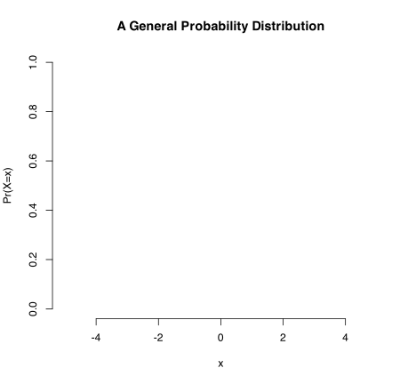
A link to the slides for the day.
Two links:
Probability and Probability Distributions
Probability: The Logic of Science
Jaynes presents a few core ideas and requirements for his rational system. Probability emerges as the representation of circumstances in which any given realization of a process is either TRUE or FALSE but both are possible and can be expressed by probabilities.
- that sum to one for all events
- are greater than or equal to zero for any given event
Convex Combinations
The formal definition is a linear combination with non-negative coefficients that sum to one. Sound familiar? This reasoning applies pretty broadly.
Weighted averages….
Decision Trees
Characterizing expected value for risk neutral agents. Decision trees [radiant has one] formalize this idea. We can also just compute them.
Representing Probability Distributions
Is of necessity two-dimensional,
- We have \(x\) and
- and \(Pr(X=x)\) in one of two types (Pr or f) equating to sums [discrete] or integrals [over continuua].
Probability Distributions of Two Forms
Our core concept is a probability distribution just as above. These come in two forms for two types [discrete (qualitative)] and continuous (quantitative)] and can be either:
- Assumed, or
- Derived
The Poster and Examples
Distributions are nouns.
Sentences are incomplete without verbs – parameters.
We need both; it is for this reason that the former slide is true.
We do not always have a grounding for either the name or the parameter.
For now, we will work with univariate distributions though multivariate distributions do exist.
Continuous vs. Discrete Distributions
The differences are sums versus integrals. Why?
- Histograms or
- Density Plots
The probability of exactly any given value is zero on a true continuum.
Functions
Probability distributions are mathematical formulae expressing likelihood for some set of qualities or quantities.
- They have names: nouns.
- They also have verbs: parameters.
Like a proper English sentence, both are required.
Models
What is a model?
. . .
For our purposes, it is a systematic description of a phenomenon that shares important and essential features of that phenomenon. Models frequently give us leverage on problems in the absence of alternative approaches.
Our Applications
- The uniform is defined by a minimum and maximum.
- The normal with mean \(\mu\) and standard deviation \(\sigma\) or variance - \(\sigma^2\).
- The Poisson will be defined an arrival rate \(\lambda\) – lambda.
- Bernoulli trials: Two outcomes occur with probability \(\pi\) and \(1-\pi\).
- The binomial distribution will be defined by a number of trials \(n\) and a probability \(\pi\).
- The geometric distribution defines the first success of \(n\) trials with probability \(\pi\).
- The negative binomial distribution defines the probability of \(k\) successes in \(n\) trials with probability \(\pi\). It is related to the Poisson.
- The binomial distribution will be defined by a number of trials \(n\) and a probability \(\pi\).
The Uniform Distribution
- Is flat, each value is equally likely.
- Defined on 0 to 1 gives a random cumulative probability \(X \leq x\).
- \(\uparrow\) It’s a random probability in 0 and 1.
- Is also known as the rectangular distribution.
Uniform(0,1)
library(patchwork)
Unif <- data.frame(x=seq(0, 1, by = 0.005)) %>% mutate(p.x = punif(x), d.x = dunif(x))
p1 <- ggplot(Unif) + aes(x=x, y=p.x) + geom_step() + labs(title="Distribution Function [cdf/cmf]") + theme_minimal()
p2 <- ggplot(Unif) + aes(x=x, y=d.x) + geom_step() + labs(title="Density Function [pdf/pmf]") + theme_minimal()
p2 + p1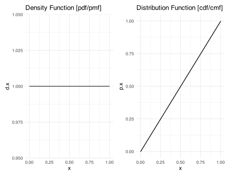
The Normal [Gaussian]
\[f(x|\mu,\sigma^2 ) = \frac{1}{\sqrt{2\pi\sigma^{2}}} \exp \left[ -\frac{1}{2} \left(\frac{x - \mu}{\sigma}\right)^{2}\right]\]
Is the workhorse of statistics. Key features:
- Is self-replicating: sums of normals are normal.
- If \(X\) is normal, then \[ Z = \frac{(X - \mu)}{\sigma} \] is normal.
The Normal [Plotted]
library(patchwork)
Unif <- data.frame(x=seq(0, 1, by = 0.005)) %>% mutate(p.x = punif(x), d.x = dunif(x))
p1 <- ggplot(Unif) + aes(x=x, y=p.x) + geom_step() + labs(title="Distribution Function [cdf/cmf]") + theme_minimal()
p2 <- ggplot(Unif) + aes(x=x, y=d.x) + geom_step() + labs(title="Density Function [pdf/pmf]") + theme_minimal()
p2 + p1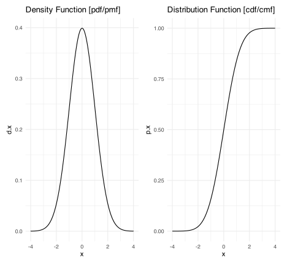
The z-transform
The generic z-transformation applied to a variable \(x\) centers [mean\(\approx\) 0] and scales [std. dev. \(\approx\) variance \(\approx\) 1] to \(z_{x}\) for population parameters.1 In this case, two things are important.
this is the idea behind there only being one normal table in a statistics book.
the \(\mu\) and \(\sigma\) are presumed known.
\[z = \frac{x - \mu}{\sigma}\]
Sample z-scores
The scale command in \(R\) does this for a sample.
\[z = \frac{x - \overline{x}}{s_{x}}\] where \(\overline{x}\) is the sample mean of \(x\) and \(s_{x}\) is the sample standard deviation of \(x\).
In samples, the 0 and 1 are exact; these are features of the mean and degrees of freedom. If I know the mean and any \(n-1\) observations, the \(n^{th}\) observation is exactly the value such that the deviations add up to zero/cancel out.
An Earnings Example
Suppose earnings in a community have mean 55,000 and standard deviation 10,000. This is in dollars. Suppose I earn 75,000 dollars. First, if we take the top part of the fraction in the \(z\) equation, we see that I earn 20,000 dollars more than the average (75000 - 55000). Finishing the calculation of z, I would divide that 20,000 dollars by 10,000 dollars per standard deviation. Let’s show that.
\[ z = \frac{75000 dollars - 55000 dollars}{\frac{10000 dollars}{SD}} = +2 SD \].
I am 2 standard deviations above the average (the +) earnings. All \(z\) does is re-scale the original data to standard deviations with zero as the mean. The metric is the standard deviation.
Suppose I earn 35,000. That makes me 20,000 below the average and gives me a z score of -2. I am 2 standard deviations below average (the -) earnings.
Z and symmetry
\(z\) is an easy way to assess symmetry.
- The mean of z is always zero but the distribution of z to the left and right of zero is informative. If they are roughly even, then symmetry is likely.
- If the signs are uneven, then symmetry is unlikely.
- In R, \(z\) is automated with the scale() command. The last line uses a table and the sign command to show the positive and negative z.
# Generate random normal income
DataF <- data.frame(Hypo.Income = rnorm(1000, 55000, 10000)) %>%
# z-transform income [mean 55000ish, std. dev. 10000ish]
mutate(z.Income = scale(Hypo.Income))
# Show the data.frame
head(DataF)
table(sign(DataF$z.Income)) Hypo.Income z.Income
1 63176.35 0.8088602
2 53885.13 -0.1087458
3 64385.18 0.9282453
4 50197.52 -0.4729364
5 56565.84 0.1560023
6 47498.63 -0.7394807
-1 1
491 509 Probability Distributions
Distributions in R are defined by four core parts:
- r: random variables
- d: density/probability that \(Pr(X=x)\) or \(f(x)\)
- p: cumulative probability (given q) \(Pr(X\leq q)=p\)
- q: quantile (given p): x such that \(Pr(X\leq q)=p\)
Why Normals?
- The Central Limit Theorem
- They Dominate Ops [\(6\sigma\)]
- Normal Approximations Abound
Normals
Problem 4 [Normal]
The Michelin tire company has developed a revolutionary new type of steel-belted radial tire. After extensive testing, the population of tire lives is believed to be well represented by a normal distribution with mean tire life \(\mu\) = 96,000 miles and standard deviation \(\sigma\) = 12,000 miles. The company plans to offer a warranty providing for replacement tires if the original tires fail to last through the warranty period. Before embarking on an in-depth analysis of the warranty problem, we will first warm up with a few standard normal probability calculations.
- Find the probability that a standard (mean zero, standard deviation one) normal random variable assumes a value between -0.89 and 1.13.
result <- radiant.basics::prob_norm(mean = 0, stdev = 1, lb = -0.89, ub = 1.13)
summary(result)Probability calculator
Distribution: Normal
Mean : 0
St. dev : 1
Lower bound : -0.89
Upper bound : 1.13
P(X < -0.89) = 0.187
P(X > -0.89) = 0.813
P(X < 1.13) = 0.871
P(X > 1.13) = 0.129
P(-0.89 < X < 1.13) = 0.684
1 - P(-0.89 < X < 1.13) = 0.316plot(result)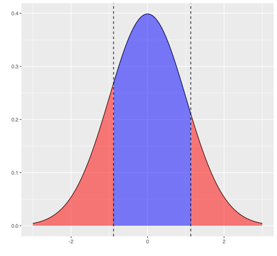
- Approximate the value of z such that the probability of a standard normal random variable falling in the interval [0, z] is 0.495; that is, such that \(Pr(0 < Z < z) = 0.495\).
result <- radiant.basics::prob_norm(mean = 0, stdev = 1, plb = 0.5, pub = 0.995)
summary(result, type = "probs")Probability calculator
Distribution: Normal
Mean : 0
St. dev : 1
Lower bound : 0.5
Upper bound : 0.995
P(X < 0) = 0.5
P(X > 0) = 0.5
P(X < 2.576) = 0.995
P(X > 2.576) = 0.005
P(0 < X < 2.576) = 0.495
1 - P(0 < X < 2.576) = 0.505plot(result, type = "probs")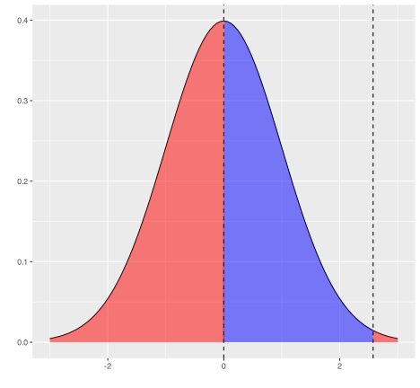
- Use R to produce a graphic of the Normal(\(\mu\) = 96,000, \(\sigma\) = 12,000). Use the Empirical Rule to establish approximate 95% tolerance intervals for tire life; that is, to establish an approximate range into which 95% of tire lives are expected to fall.
This empirical rule says that about 95% fall within plus or minus two standard deviations. In this case, 72000 to 120,000.
- If the company were to set the mileage warranty at 80,000 miles, what fraction of the tires would fail prior to the warranted mileage? That is, what fraction of the tires will have tire life less than 80,000 miles?
result <- radiant.basics::prob_norm(mean = 96000, stdev = 12000, lb = 80000)
summary(result)Probability calculator
Distribution: Normal
Mean : 96000
St. dev : 12000
Lower bound : 80000
Upper bound : Inf
P(X < 80000) = 0.091
P(X > 80000) = 0.909plot(result)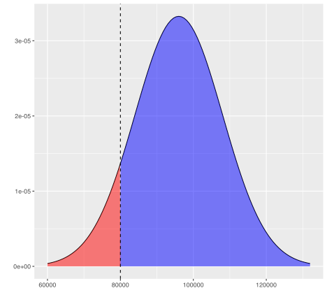
- Suppose that Michelin management would like to set the mileage warranty level so that no more than 0.5 percent of the tires will fail to meet the warranted mileage (probability of failure 0.005,) What should the warranted mileage be, to the nearest 1000 miles? 65000
result <- radiant.basics::prob_norm(mean = 96000, stdev = 12000, plb = 0.005)
summary(result, type = "probs")Probability calculator
Distribution: Normal
Mean : 96000
St. dev : 12000
Lower bound : 0.005
Upper bound : 1
P(X < 65090.048) = 0.005
P(X > 65090.048) = 0.995plot(result, type = "probs")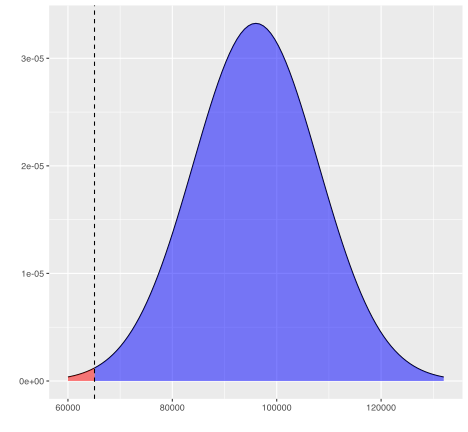
Discrete Distributions
Bernoulli Trials
The Generic Bernoulli Trial
Suppose the variable of interest is discrete and takes only two values: yes and no. For example, is a customer satisfied with the outcomes of a given service visit?
For each individual, because the probability of yes (1) \(\pi\) and no (0) 1-\(\pi\) must sum to one, we can write:
\[f(x|\pi) = \pi^{x}(1-\pi)^{1-x}\]
Binomial Distribution
For multiple identical trials, we have the Binomial:
\[f(x|n,\pi) = {n \choose k} \pi^{x}(1-\pi)^{n-x}\] where \[{n \choose k} = \frac{n!}{k!(n-k)!}\]
The Binomial

Scottish Pounds
Informal surveys suggest that 15% of Essex shopkeepers will not accept Scottish pounds. There are approximately 200 shops in the general High Street square.
- Draw a plot of the distribution and the cumulative distribution of shopkeepers that do not accept Scottish pounds.
Scots <- data.frame(Potential.Refusers = 0:200) %>% mutate(Prob = round(pbinom(Potential.Refusers, size=200, 0.15), digits=4))
Scots %>% ggplot() + aes(x=Potential.Refusers, y=Prob) + geom_point() + labs(x="Refusers", y="Prob. of x or Less Refusers") + theme_minimal() -> Plot1
Plot1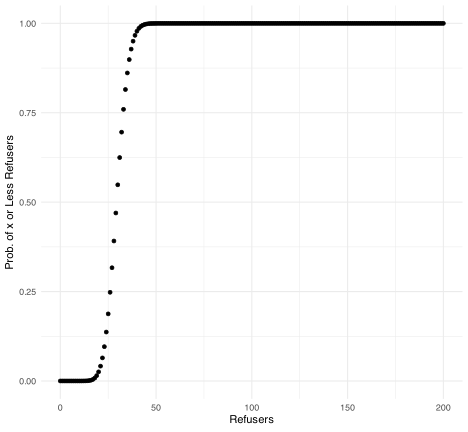
A Nicer Plot
library(plotly)
p <- ggplotly(Plot1)
pMore Questions About Scottish Pounds
- What is the probability that 24 or fewer will not accept Scottish pounds?
pbinom(24, 200, 0.15)[1] 0.1368173- What is the probability that 25 or more shopkeepers will not accept Scottish pounds?
1-pbinom(24, 200, 0.15)[1] 0.8631827- With probability 0.9 [90 percent], XXX or fewer shopkeepers will not accept Scottish pounds.
qbinom(0.9, 200, 0.15)[1] 37Application: The Median is a Binomial with p=0.5
Interestingly, any given observation has a 50-50 chance of being over or under the median. Suppose that I have five datum.
- What is the probability that all are under?
pbinom(0,size=5, p=0.5)[1] 0.03125- What is the probability that all are over?
dbinom(5,size=5, p=0.5)[1] 0.03125- What is the probability that the median is somewhere in between our smallest and largest sampled values?
Everything else.
The Rule of Five
- This is called the Rule of Five by Hubbard in his How to Measure Anything.
Geometric Distributions
How many failures before the first success? Now defined exclusively by \(p\). In each case, (1-p) happens \(k\) times. Then, on the \(k+1^{th}\) try, p. Note 0 failures can happen…
\[Pr(y=k) = (1-p)^{k}p\]
Example: Entrepreneurs
Suppose any startup has a \(p=0.1\) chance of success. How many failures?
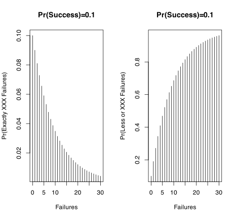
Example: Entrepreneurs
Suppose any startup has a \(p=0.1\) chance of success. How many failures for the average/median person?
qgeom(0.5,0.1)[1] 6- [Geometric] Plot 1000 random draws of “How many vendors until one refuses my Scottish pounds?”
Geoms.My <- data.frame(Vendors=rgeom(1000, 0.15))
Geoms.My %>% ggplot() + aes(x=Vendors) + geom_histogram(binwidth=1)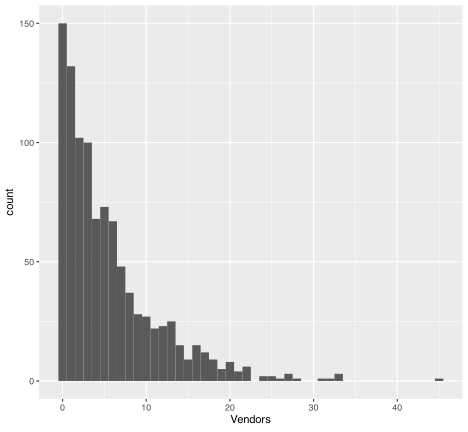
We could also do something like.
plot(seq(0,60), pgeom(seq(0,60), 0.15))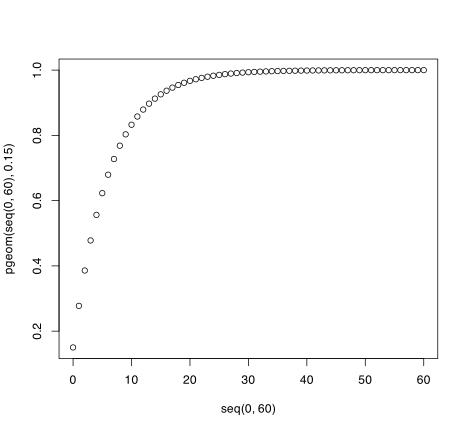
Negative Binomial Distributions
How many failures before the \(r^{th}\) success? In each case, (1-p) happens \(k\) times. Then, on the \(k+1^{th}\) try, we get our \(r^{th}\) p. Note 0 failures can happen…
\[Pr(y=k) = {k+r-1 \choose r-1}(1-p)^{k}p^{r}\]
Needed Sales
I need to make 5 sales to close for the day. How many potential customers will I have to have to get those five sales when each customer purchases with probability 0.2.
library(patchwork)
DF <- data.frame(Customers = c(0:70)) %>%
mutate(m.Customers = dnbinom(Customers, size=5, prob=0.2),
p.Customers = pnbinom(Customers, size=5, prob=0.2))
pl1 <- DF %>% ggplot() + aes(x=Customers) + geom_line(aes(y=p.Customers))
pl2 <- DF %>% ggplot() + aes(x=Customers) + geom_point(aes(y=m.Customers))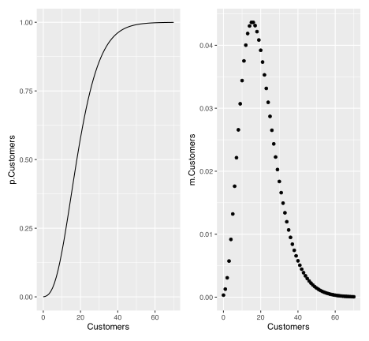
Events: The Poisson

Take a binomial with \(p\) very small and let \(n \rightarrow \infty\). We get the Poisson distribution (\(y\)) given an arrival rate \(\lambda\) specified in events per period.
\[f(y|\lambda) = \frac{\lambda^{y}e^{-\lambda}}{y!}\]
Examples: The Poisson
- Walk in customers
- Emergency Room Arrivals
- Births, deaths, marriages
- Prussian Cavalry Deaths by Horse Kick
- Fish?
Air Traffic Controllers
FAA Decision: Expend or do not expend scarce resources investigating claimed staffing shortages at the Cleveland Air Route Traffic Control Center.
Essential facts: The Cleveland ARTCC is the US’s busiest in routing cross-country air traffic. In mid-August of 1998, it was reported that the first week of August experienced 3 errors in a one week period; an error occurs when flights come within five miles of one another by horizontal distance or 2000 feet by vertical distance. The Controller’s union claims a staffing shortage though other factors could be responsible. 21 errors per year (21/52 errors per week) has been the norm in Cleveland for over a decade.
Some Questions
- Plot a histogram of 1000 random weeks. NB: pois is the noun with no default for \(\lambda\) – the arrival rate.
DF <- data.frame(Close.Calls = rpois(1000, 21/52))
ggplot(DF) + aes(x=Close.Calls) + geom_histogram()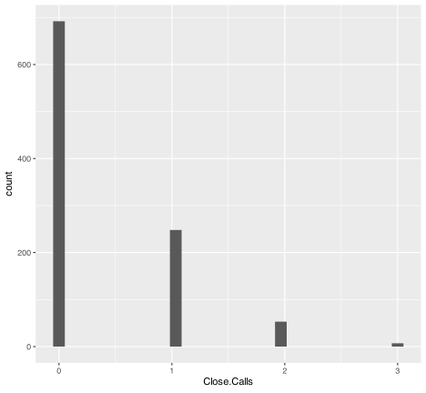
ggplot(DF) + aes(x=Close.Calls) + stat_ecdf(geom="step")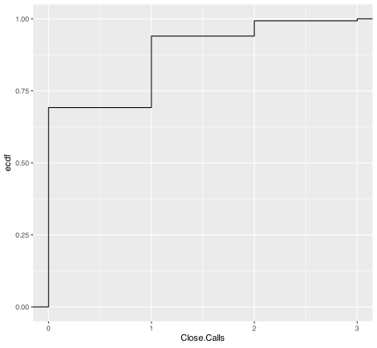
- Plot a sequence on the x axis from 0 to 5 and the probability of that or fewer incidents along the y. seq(0,5)
DF <- data.frame(x=0:5, y=ppois(0:5, 21/52))
ggplot(DF) + aes(x=x, y=y) + geom_col()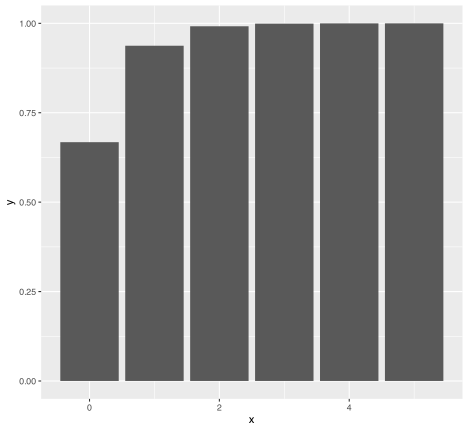
What would you do and why? Not impossible
After analyzing the initial data, you discover that the first two weeks of August have experienced 6 errors. What would you now decide? Well, once is 0.0081342. Twice, at random, is that squared. We have a problem.
Deaths by Horse Kick in the Prussian cavalry?
library(vcd)
data(VonBort)
head(VonBort) deaths year corps fisher
1 0 1875 G no
2 0 1875 I no
3 0 1875 II yes
4 0 1875 III yes
5 0 1875 IV yes
6 0 1875 V yesmean(VonBort$deaths)[1] 0.7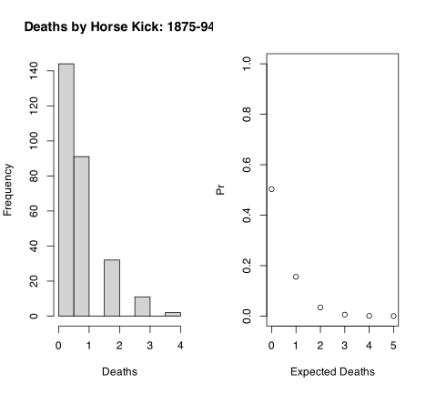
Simulation: A Powerful Tool
In the geometric example, I was concerned with sales. I might also want to generate revenues because I know the rough mean and standard deviation of sales. Combining such things together forms the basis of a Monte Carlo simulation. More on this in a bit, it is known as calibration.
An Example
Customers arrive at a rate of 7 per hour. You convert customers to buyers at a rate of 85%. Buyers spend, on average 600 dollars with a standard deviation of 150 dollars.
Sim <- 1:1000
Customers <- rpois(1000, 7)
Buyers <- rbinom(1000, size=Customers, prob = 0.85)
Data <- data.frame(Sim, Buyers, Customers)
Data <- Data %>% group_by(Sim) %>% mutate(Revenue = sum(rnorm(Buyers, 600, 150))) %>% ungroup()Simulation Results
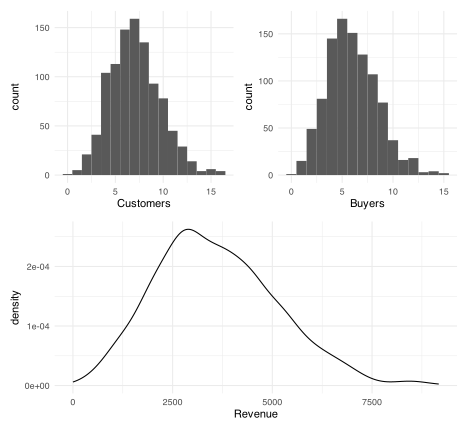
A Summary
Distributions are how variables and probability relate. They are a graph that we can enter in two ways. From the probability side to solve for values or from values to solve for probability. It is always a function of the graph.
Distributions generally have to be sentences.
- The name is a noun but it also has
- parameters – verbs – that makes the noun tangible.
Monte Carlo Simulation Generally
- Election Forecasts and Calibration
- More generally, on calibration
- Sensitivity analysis
- One way to think about much of this is that we have many spreadsheet models, the twist is to think about the proper role of what we are uncertain about and how uncertain we are.
Setting Up Inference
To this point, the distributions are assumed. These are assumptions we make to gain leverage on a problem because we have little to work with. They are the simplest of models and they are completely or largely data free.
The remainder of the term will take data as given and begin a process known as statistical learning using the core insight that probability distributions, and uncertainty, abound.
A Calibration Example
This example focuses on calories from FastFood.
First, provide a summary of the mean, standard deviation, and 25th and 75th percentiles of calories for each restaurant chain in the data.
Second, visualize these data using some appropriate visualization method and intepret the relevant visual.
Third, firms are ranked according to the National Institute of Fast Food as Pure Calories evaluates the 75th percentile of menu offerings and ranks the chains from top as 1 to bottom. What are their rankings?
The rest…. Suppose that calories from Mcdonalds items are said to follow a normal distribution, with mean and standard deviation exactly following the observed data.
What are those values, mean and standard deviation?
Provide a plot of the distribution that those values and the assumption imply.
Provide a plot of the actual data on calories. Does this assumption seem reasonable? Do the data seem symmetric?
Given this information so far, would calories best be described by a mean and standard deviation or by a five-number summary? How should symmetry weigh into your decision?
Provide that summary if you have not already.
There is one very large value in the observed data. What is the item? Use your normal distribution from question 2 to calculate how likely an item of that many calories or more should occur given the distribution. What is the z-score for that item? What does this mean?
Assuming the normal, as given in 1 and 2
- what is the probability of items between 300 and 675 calories?
- what range of calories represent the middle 60% of values?
- how likely are items over 1500 calories?
To Inference
Footnotes
\(\approx\) is approximately equal to.↩︎